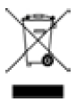

This device should be disposed of separately, not as unsorted municipal waste. To dispose of your device, you should use appropriate collection, reuse and recycling systems available in your region. The use of these collection, reuse and recycling systems is designed to reduce pressure on natural resources and prevent hazardous substances from damaging the environment. If you need information on these disposal systems, please contact your local waste administration. The crossed-bin symbol invites you to use these disposal systems. If you require information on collection and disposal of your ResMed device please contact your ResMed office, local distributor or go to ResMed.com/environment.